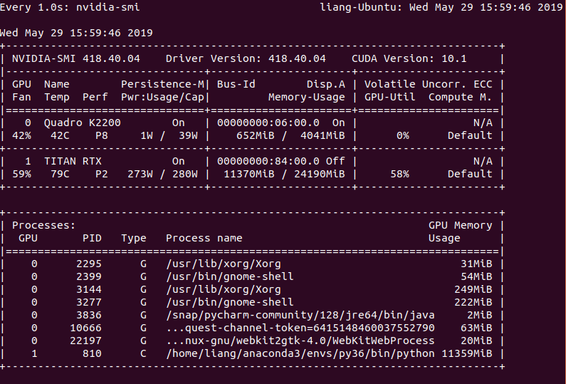
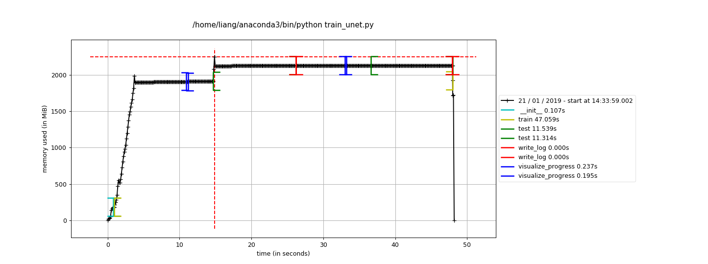

Adjust your parameters!¶
In this part, I will try to explain about the problems I have confronted with and the parameters I have tuned when I try to train the neural network and also the methods I have found to view or fixed the problems. There must be a lot of other problems I can not cover here, and in this case google it first and see if other people have solved it.
About memory and time consumption¶
Memory¶
Let’s begin to view the usage[memory consumption] of GPU first, which can be easily done by calling the following code in terminal.
nvidia-smi
watch -n 1 nvidia-smi
Where nvidia-smi will show the results one time, while watch -n 1 nvidia-smi stands for the case where the terminal will update the results every 1 second, and the results are shown below.
{kind=link}
Here, we can see that in
To check the time and memory consumption of program by using:
Time and memory¶
from memory_profiler import profile
@profile()
def basic_mean(N=5):
nbrs = list(range(0, 10 ** N))
total = sum(nbrs)
mean = sum(nbrs) / len(nbrs)
return mean
if __name__ == '__main__':
basic_mean()
After running python profile.py, the log will be generated and shown in the terminal.
Line # Mem usage Increment Line Contents
=================================================
2 36.7 MiB 36.7 MiB @profile()
3 def basic_mean(N=5):
4 40.5 MiB 3.7 MiB nbrs = list(range(0, 10 ** N))
5 40.5 MiB 0.0 MiB total = sum(nbrs)
6 40.5 MiB 0.0 MiB mean = sum(nbrs) / len(nbrs)
7 40.5 MiB 0.0 MiB return mean
fajgi
{kind=link}